學習目標
- 在 Ubuntu 安裝 SSH
- 遠端登入到 Ubuntu 中
前置準備作業
- 一台可連上網路的 Ubuntu 電腦
在 Ubuntu 端
Step 1. 開啟 Terminal
❖ ① 點選【 Search your computer 】
② 輸入【 terminal 】
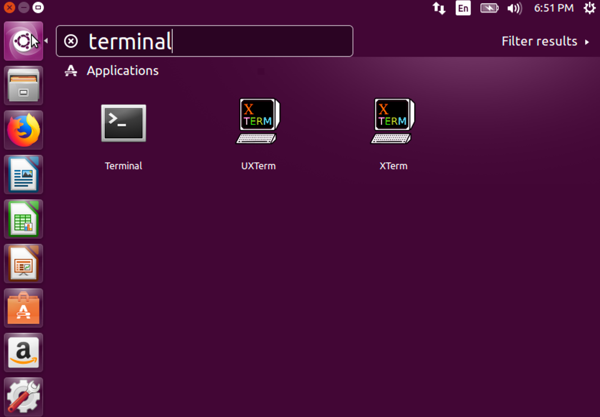
❖ ③ 開啟【 terminal 】
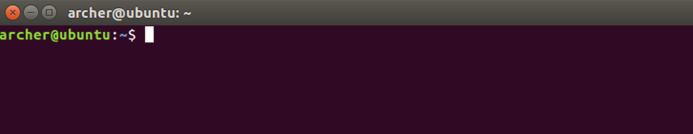
Step 2. 更新套件清單
❖ 在 【 Terminal 】中輸入下方指令
sudo apt-get update
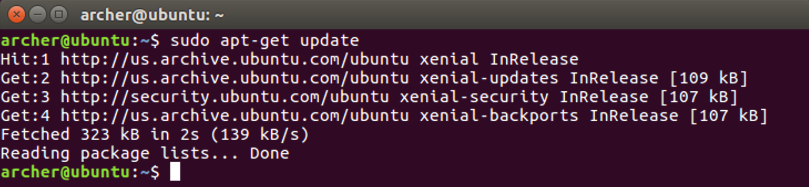
Step 3. 安裝 OpenSSH Server
❖ 在 【 Terminal 】中輸入下方指令
sudo apt-get install -y openssh-server
Step 4. 確認 SSH 服務
❖ 在 【 Terminal 】中輸入下方指令
sudo service ssh status
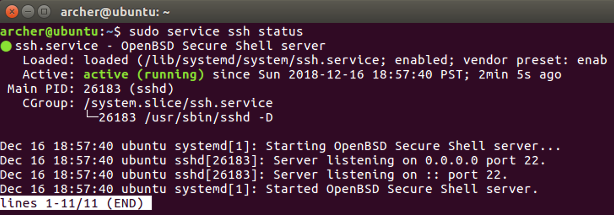
Step 5. 查詢 Ubuntu 的 IP
❖ 在 【 Terminal 】中輸入下方指令
ifconfig
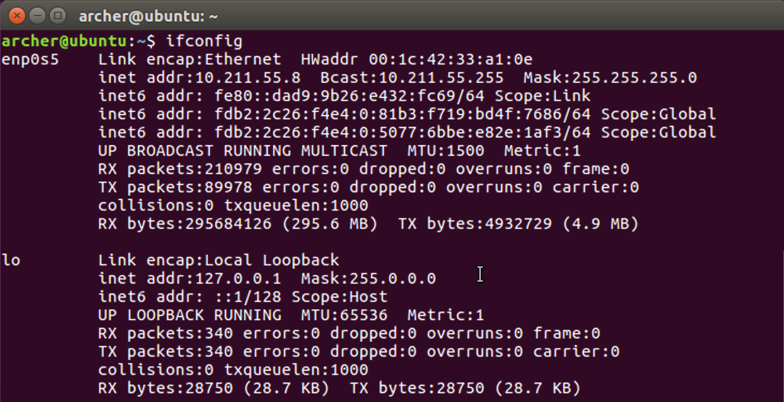
Step 6. 遠端登入到 Ubuntu
- Windows
❖ ① 於 Putty 【 Windows 】中輸入 Ubuntu 的 IP
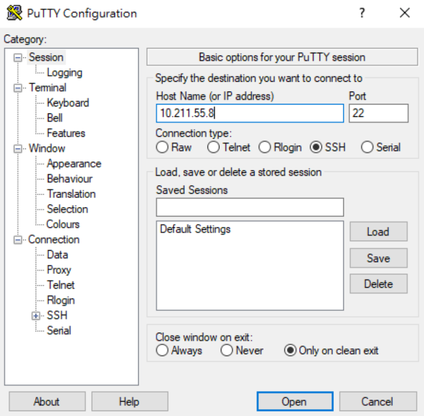
❖ ② 點選【 是(Y) 】
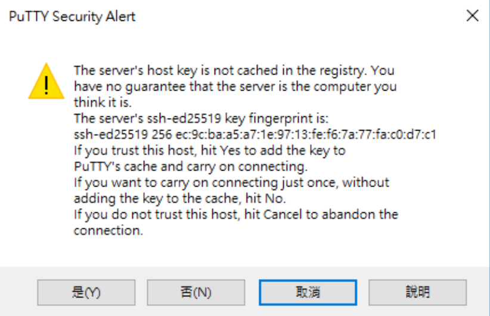
❖ ③ 輸入 Ubuntu 的登入帳號
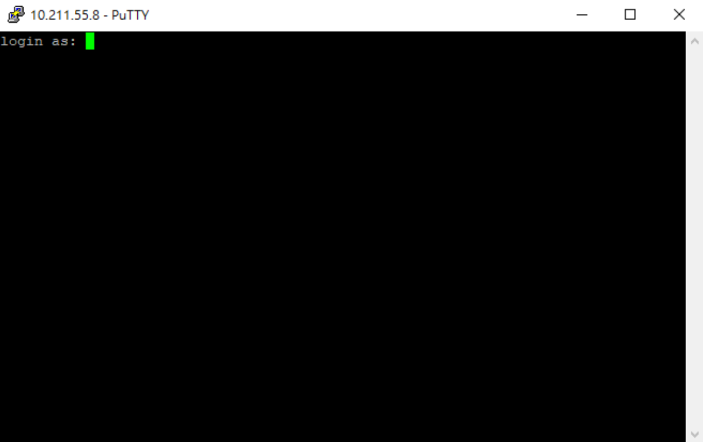
❖ ④ 輸入 Ubuntu 的登入密碼
㊟ 輸入密碼時，游標不會移動是正常的狀態
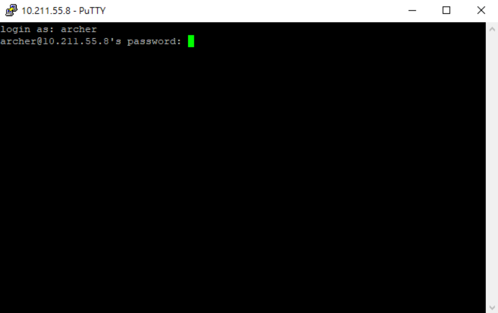
❖ ⑤ 登入成功畫面
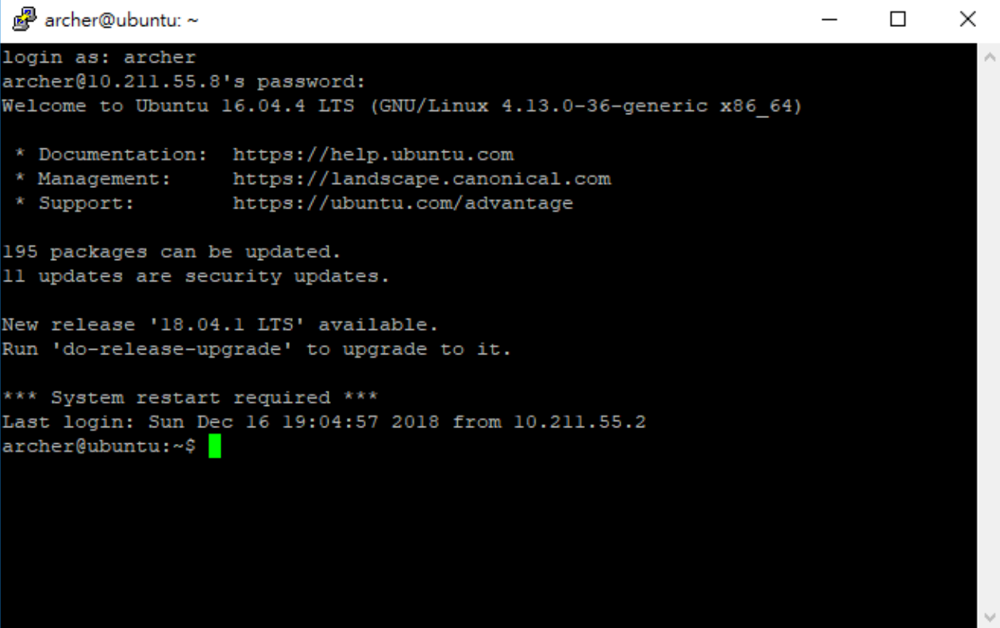
- macOS
❖ 於終端機 【 macOS 】
① ssh Ubuntu-Login-Account@Ubuntu-IP
② 輸入密碼
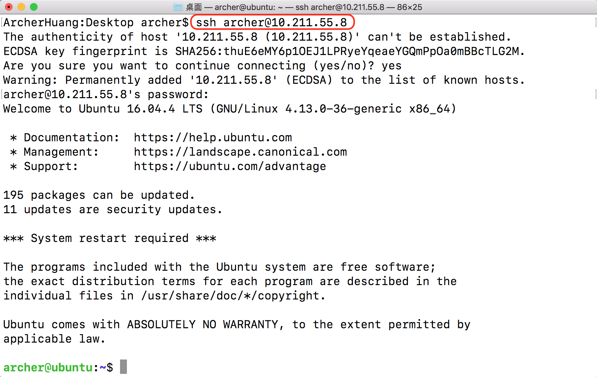